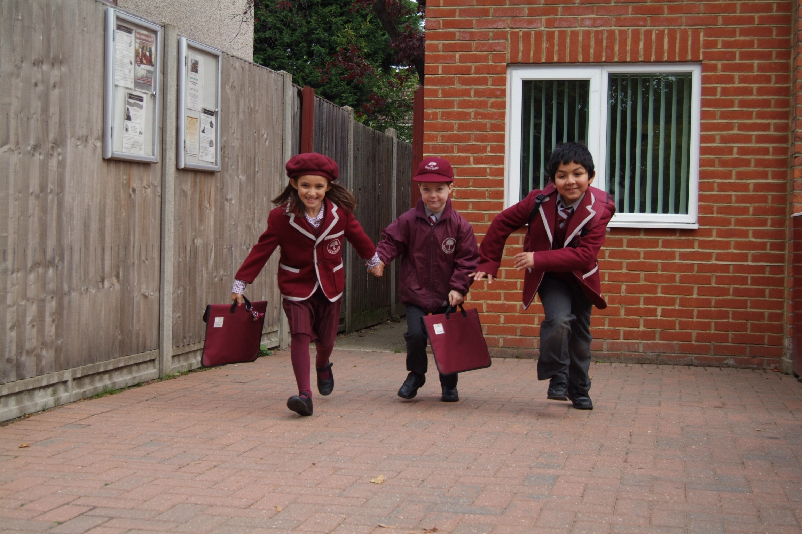

|
 |
 |
Westward SchoolTransition to Year 1
School Day
 Entry into school in the morning is via the middle gate where a member of staff from the office will be on duty from 8.30am. (Normally Mrs James the School Manager.) All children from this age should be confident enough to come into school independently.
If you arrive before 8.30am you may choose to use the Breakfast Club facilities in the hall for £4.50. Breakfast Club starts from 7.30am.
Year 1 children go into the playground where there is a member of staff on duty from 8.30am until the first bell is rung at 8.45am. The children will line up when the second bell is rung and the class teacher will come and collect them from the playground each morning and escort them into class. The children need to remember to keep all their book bags, P.E kits etc with them when they go into the playground in the morning as the classroom will be locked for safety and security reasons.
Dismissal is from the side gate at 3.20pm. The children will be handed over one by one by the class teacher to the named person/s for collection.
Arrangements for collection of children should be noted with telephone numbers at the back of the home message book. The Year 1 teacher should be informed via the home message book of any changes in rotas or if a child is to go home with someone else. Nannies, au pairs etc should be introduced to the class teacher.
We will not allow children to leave school with people we do not know.
Telephone messages left on the answer phone will be listened to at regular intervals during the day. Useful email addresses School Office: This e-mail address is being protected from spambots. You need JavaScript enabled to view it School Manager's email address: This e-mail address is being protected from spambots. You need JavaScript enabled to view it Headteacher's email address: This e-mail address is being protected from spambots. You need JavaScript enabled to view it
Please do not park on the zig-zag lines during the no waiting times or obstruct neighbours’ driveways. Please also observe the new parking restrictions. You may legally park in the parking bays, side roads and Stompond Lane car park.
Home Message Book
Parents are asked to look at the “Home Message Book” daily. All messages must be signed. Parents may use the book to write any messages to the teacher. Please write messages at the front of the book. At the back of the book parents are asked to write contact numbers, work numbers etc. so that we will be able to get in touch in case of illness or emergency.
Medicine
If medicine needs to be given during the day it should be handed to Mrs James with clear instructions written on the Medicine Authorisation Form obtainable from the office. Please do not ask for aspirin based products to be given.
Breaks
Children in Year 1 go out to play at break times and lunch times in the big playground with KG and Year 2. They are always supervised by at least one member of staff. The children have a choice of equipment to play with at break times and lunch times such as bean bags, skipping ropes, soft balls, quoits and stilts. The children are encouraged to play together with children of their own age and develop their friendships.
Snack
Children in Year 1 need to bring in their own fruit to school daily. Children may bring in a piece of fruit, small portion of fruit in a labelled box or alternatively bring in some money in a named purse which they can use to buy a portion of fruit from Mrs Johnson in the kitchen at break times. Each cup full of fruit costs 10 to 20p.
Children in Year 1 can also have a drink of milk daily. This will be billed to your termly account. Water is available at all times from the water fountains. Please indicate via home message book whether your child will drink milk or water. Your child may also have their own named plastic bottle of water in the classroom.
Library
In Year 1 the children get the opportunity to begin to use the main school library. They can choose a fiction book from the infant section or a non- fiction book. The children will be taught at the beginning of the Autumn Term how to use the library system and the times it is open. It is up to them how often they wish to change their book but they must return the book they have taken out before they will be issued with a new one.
The library opening times are as follows; Monday, Tuesday, Wednesday and Friday lunchtimes.
Please be aware that the non-fiction section of the library contains books catering for the age range 5 to 11. The Year 5 monitors and parent helpers will do their best to steer the children in the right direction to choose an appropriate book but on occasions an inappropriate one might be chosen. If this does happen please return the book to school and we will endeavour to find a more suitable one.
To begin with children usually choose books from the infant fiction section.
Clothing
All clothing and belongings should be clearly marked with the child’s name. This includes shoes and plimsolls. Plimsolls should be black elastic or Velcro.
P.E Kits
In Year 1, the children will need to wear P.E kit to school every Tuesday unless otherwise notified. This will be shorts, T-shirts, gym shoes, track-suit tops and bottoms. They need not bring school uniform to change back into but can wear outdoor shoes and bring gym shoes with them if the weather is wet.
Clubs
There are a variety of clubs on offer for Year 1 children. Exact days and times will be confirmed at the beginning of the Autumn Term. If your child is interested in joining a club then do put a note in the home message book.
Please be advised that there might be a waiting list for Gym, Ballet, Art and Judo.
Textbooks
Particular care should be taken with reading books and text books which are brought home. School books are printed in rather short runs and quickly go out of print. Sometimes this means that when one or two books are lost a whole class set becomes unusable. In the event of a mislaid book a donation of £5 will be requested to purchase a replacement copy. Children should put their books straight back in their school bags as soon as they have finished their homework etc.
Homework
Homework is set according to age and year group. It is generally a reinforcement of class work and should ideally be the child’s own effort with your guidance. If a child needs a much longer time to complete the work or experiences difficulty the teacher should be informed via the home message book.
You will be advised about the weekly homework at the start of the Autumn term.
Reports
These are generally sent out at the end of the Autumn and Summer terms and there is an Open Evening in the Easter term. However parents should not wait for an official Open Evening if they or their child has a concern. Teachers are happy to see parents before or after school whenever the need arises. There will be an opportunity to informally meet the teachers during the first half of the Autumn term in Lower School.
Discipline
This is firm but not rigid. Good manners are expected at all times. Discipline problems would be discussed with a parent at an early stage. Children will be rewarded in Year 1 for their efforts in a variety of different ways such as stickers, special certificates, star of the week awards etc.
Equipment
In Year 1 the children are encouraged to bring in a glue stick to keep in class – named please.
|
| Last Updated on Wednesday, 19 March 2014 11:49 |